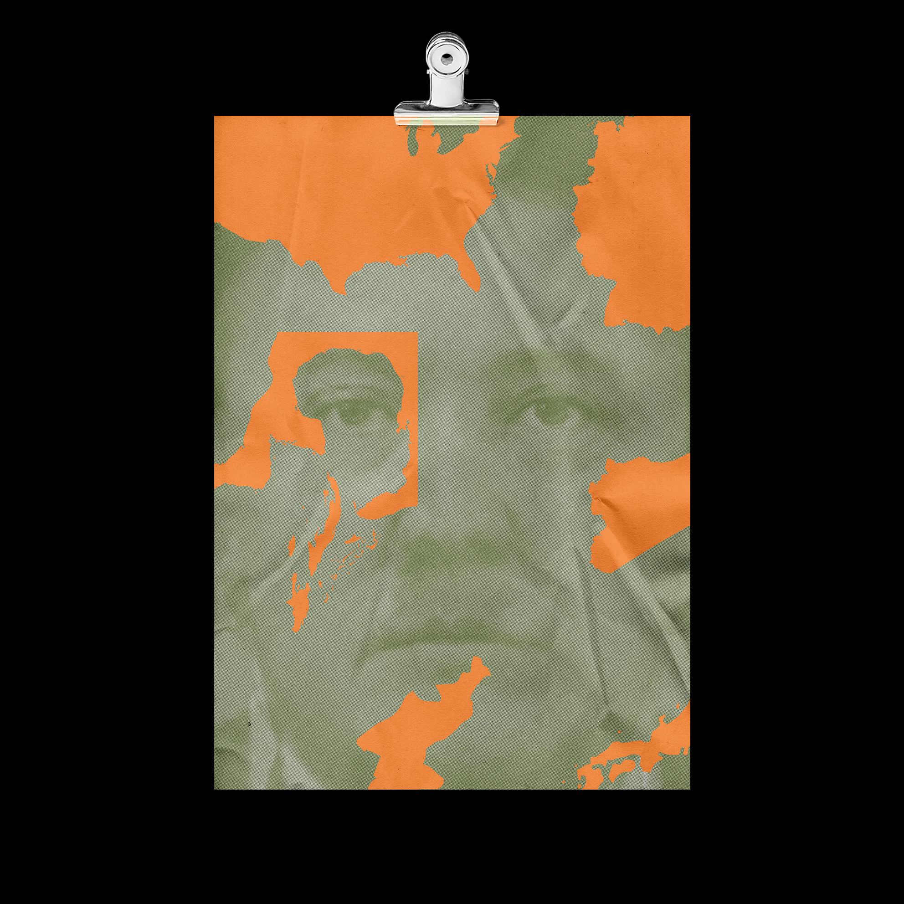
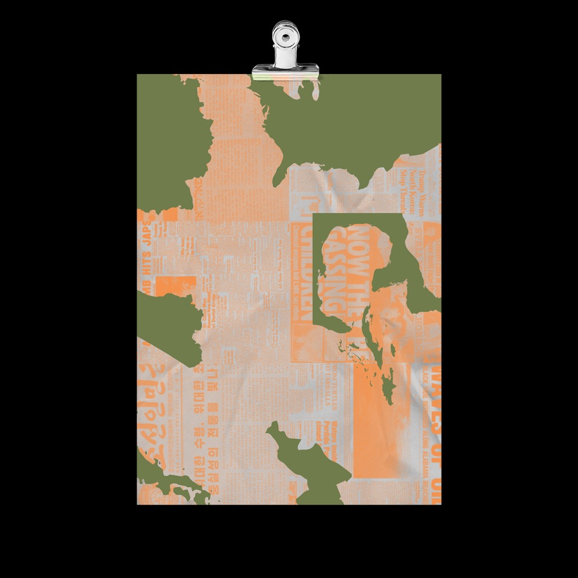

PROYECTO PERSONAL - AÑO - 2018
DESASTRES HUMAN - ALES es un proyecto que trata acerca de los desastres
que han ocurrido a lo largo de la historia, por causa de los humanos;
Bombas nucleares, derrames de petroleo, bombas químicas, accidentes en
plantas nucleares y más han sido inventadas y provocadas por nosotros
mismos, los humanos. Sin embargo, se puede observar como en todos estos
“accidentes” hay un responsable detrás de ellos que suele tener el mismo
perfil. Un hombre blanco, con harto poder, y falta de humanidad.

